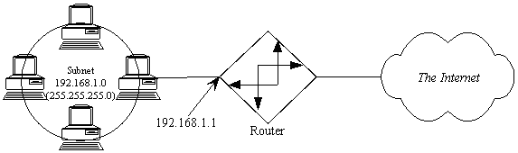

This document is designed to give the reader a reasonable working knowledge of TCP/IP subnetting, addressing, and routing. It is not intended to be complete, or to cover all issues. This is targeted toward LAN administrators just moving to TCP/IP, however it should help anyone who wants to know a little (more) about how TCP/IP works. This document does not, generally, apply to dial-up SLIP/PPP connections.
The difference between this (a primer) and an FAQ, is that most FAQ's, in practice, tend to be question-and-answer oriented, and generally seem to try to cover ALL issues, not just the ones frequently asked about. This primer is intended as a starting point for someone who has an interest in the subject, but doesn't know where to start or what questions to ask. This should also help to broaden the understanding of people who have worked with TCP/IP for a while, but either haven't had the time to study all the less-than-useful theory behind the subject, or have been somewhat overwhelmed by the many theoretical details and have missed the big picture.
This is maintained in HTML. I have made it available as one large page for the benefit of those who prefer to print off a copy and read it that way. Also useful for sharing via hard copy. If you choose to print this out and distribute this, I ask that you distribute it in its entirety, and that you don't charge for it.
Feedback, of course, is always greatly appreciated, and will help determine the direction and growth of this living document. In fact, just a quick email to say "thanks" (if it helped) will help motivate me to keep this current and expanding :-)
Developed in the early 1970's, Ethernet has proven to be one of the most simple, reliable, and long-lived networking protocols ever designed. The high speed and simplicity of the protocol has resulted in its widespread use.
Although Ethernet works across a variety of cable types, the only types generally in use today are "unshielded twisted pair" (UTP), fiber-optic, or wireless (WiFi.)
UTP and Fiber are "point to point" connections, which require a networking device (hub, switch, or router) to connect more than two devices onto the same network. Wifi requires an access point to brige to a wired network if Internet access is desired, though temporary "ad-hoc" peer-to-peer networks can be created if Internet access isn't needed.
| Ethernet Connection Types | |||
|---|---|---|---|
| Pro | Con | Typical Use | |
| UTP |
|
|
|
| Fiber |
|
|
|
| WiFi |
|
|
|
WiFi and unswitched Ethernet is like a bunch of loud people in an unmoderated meeting room. Only one person can talk at a time, because communication consists of standing up and yelling at the top of your lungs. People are allowed to start communicating whenever there is silence in the room. If two people stand up and start yelling at the same time, they wind up garbling each others' attempt at communication, an event known as a "collision." In the event of a collision, the two offending parties sit back down for a semi-random period of time, then one of them stands up and starts yelling again. Because it's unmoderated, the likelihood of collisions occurring increases geometrically as the number of talkers and the amount of stuff they talk about increases. In fact, networks with many devices are generally considered to be overloaded if the utilization exceeds 30-40%. If the collision light on your WiFi hub is lit more often than not, you probably need to segment your network.
When Ethernet was new, an "Ethernet hub" was just a dumb repeater-- anything it heard on one port, it repeated to all of its other ports. Although UTP is usually wired with eight wires split into four pair (using a connector known as an RJ45 connector), only two pairs are used-- one pair to transmit data, and another pair to receive data. While transmitting, an Ethernet card would listen to its receive pair to see if it heard anyone else talking at the same time. These two behaviors (listen for silence before talking, and detect other people talking at the same time) are described by the acronym people as CSMA/CD, or "Carrier Sense Multiple Access, Collision Detection."
As the price of Ethernet devices declined, "switching" devices were introduced that could hold a separate conversation on each port all at the same time, which vastly reduced the rate of collision. Soon after, "full-duplex" communication was introduced, which allows for devices to both send and receive packets at the same time, greatly increasing the speed of Ethernet networks, and ending worries about collisions. As a rule, every "Ethernet hub" you see today is actually a switch, aka "switching hub."
The OSI Networking Model is used as a reference point to describe how the various "layers" of networking interoperate. For this discussion, I will describe the bottom three layers:
| Layer | Name | Protocols / Terms | Devices that operate in this layer | Addresses are called... |
| 3 | Network | IP, IPX, AppleTalk | Routers | Network Addresses |
| 2 | Datalink | Ethernet, Token Ring, PPP, SLIP, HDLC | Bridges, Switches | Datalink, or MAC* addresses |
| 1 | Physical | Unshielded Twisted Pair, Shielded Twisted Pair, Coax, Twinax, Serial cable | Modems, CSU/DSUs | Repeaters, Hubs |
Combinations that include a term from each layer describe fully how a packet is getting from a given point "A" to a directly connected point "B". For example, A may be talking to B using IP over Ethernet over Unshielded Twisted Pair; or, "my computer talks to my ISP using IP over PPP over a serial cable" (a modem is simply a serial cable extender in this sense.) From the physical layer standpoint, devices have no addresses. On the datalink layer, all Ethernet and Token Ring cards all have 6-byte addresses manufactured into them, called MAC addresses (again, nothing to do with Macintoshes specifically.) Point-to-point links such as serial lines do not have MAC addresses, which creates special cases from a data transmission standpoint, that are outside the scope of this document.
The Physical layer defines the electrical media and signaling used to transmit information on a wire (or wires.) The datalink layer defines the format of the data as it is transmitted (e.g., an Ethernet frame.) Network layer information is encapsulated inside datalink layer frames. If you look at an IP packet on an Ethernet wire it would look something like this:
| Ethernet Header (with dest and src MAC addr) | IP Header (with dest and src IP addr, and checksum) | Actual Data |
Note that this indicates that, in order for two Ethernet-attached devices to communicate with each other via IP, they must know the MAC address of each other. If device "A" knows the IP address of device "B", and knows device "B" is on the same subnet, device "A" will issue an Address Resolution Protocol (ARP) broadcast. An ARP broadcast is a message that says, "Who out there is 192.168.1.1?" The TCP/IP software running on the router at 192.168.1.1 is responsible for sending back an ARP response that says, "I am 192.168.1.1, and my MAC address is 08:00:09:AF:24:33." All devices keep an ARP cache with the MAC and IP addresses of all the devices it recently communicated with directly. Try the command "arp -a" sometime on a UNIX or Windows workstation; on a Cisco router, the command is "show arp".
Note that layer 1 devices are "invisible" to layer 2; and layer 2 devices are "invisible" to layer 3. In other words, TCP/IP doesn't care if you're running over Ethernet or Token Ring, as long as it's connected properly. In fact, you can put bridging and/or switching devices on your network without disturbing any of your IP subnetting. Similarly, you can convert between different types of media (e.g., coax to twisted pair) without any layer 2 devices being aware of the change. To change layer 1 media, you typically need a layer 2 device (e.g., "I have a Ethernet Coax to Ethernet Twisted-Pair repeater".) To change the layer 2 protocol (e.g., Ethernet to Token Ring) you typically need a layer 3 device (a router.) All this is good, since it allows some measure of media independence within the network; you can run IP over just about anything better than two cans and a string, and even that, if you can find transceivers to handle it ;-)
NOTE: I'm not aware of anyone in the world still using IPX. However, sometimes highlighting the differences between two approaches to accomplishing the same task can improve our understanding of both. That being said, nothing you learn about IPX in this section will ever be useful to you in the real world, so don't feel the need to memorize anything about it.
From a LAN administrator's standpoint, IPX is almost completely auto-configuring. Since TCP/IP requires substantially more administrator understanding and time to properly implement, then IP, from a LAN administrator's standpoint (this document's target audience), is substantially more difficult to work with than IPX.
The four items you need to use IP effectively on the Internet (that you don't need to set up an IPX workstation) are the IP Address, the IP Subnet Mask, the IP Address of the Default Router, and the IP Address(es) of your Domain Name Servers (DNS Servers, often shortened to "Name Servers.")
IP Addresses: IP uses 4-byte addresses, like 192.168.1.100. IPX uses 10-byte addresses, like 10000001:0000C04C1141. Those happen to be the IP and IPX addresses of the workstation I'm using now. "But wait," you ask, "I've used IPX before and all it uses are four byte addresses." Well, that's not entirely correct. The 4-byte "IPX Address" configured into IPX-based servers is only the network portion of the address. All addresses used by routable protocols have a "network" portion, which gets your packet to your nearest router, and a "host" portion, which indicates which host station you are on that routed segment. The 4-byte "IPX Address" you define is actually a 4-byte "IPX Network Address." The other 6 bytes is the hardware address of your NIC. Since IP addresses don't use the unique hardware address of your NIC, you must assign them manually (or semi-manually by configuring a DHCP server, a task which is currently outside the scope of this document.)
IP Subnet Masks: Subnet masks (described in more detail in the next section) are used in IP to determine which part of the four-byte IP address describes the network you're on, and which part describes which host you are on that network segment. In IPX, the first four bytes always indicate the network you're on, and your six byte MAC layer address indicates which host you are on the network segment. In IP, the portions used to describe which network you're on can range from the first 8 bits of the address, to including all except the last two bits of the whole address. More in the next section.
Default Router: In IPX, routers are identified by sending out a broadcast that says, in essence, "Hey? Who out here is a router?" In IP, there has historically NOT been any automatic method for router discovery. There is now a protocol for IP router discovery, but it is not widely implemented. Therefore, you must tell the workstation what the address of the local router is. Note that with end-station PPP (like Win95 Dial-Up Networking), the default route is automatically set to, "out the serial cable." You do not need to set more than one default route. If the default router feels the packet would reach a destination better through a different router, the default router will tell your IP stack to use the other router (this is an ICMP Redirect.) If you specify no default route, no packets from that workstation can make it off the local wire; therefore, it is better to set a wrong default route than no default route. If in doubt, set the default route to the address of any known router on the local subnet.
DNS: In IPX, designed by Novell, the names (and corresponding addresses) of ALL services available on the network are stored in ALL Netware servers as a SAP table (SAP stands for Service Advertising Protocol.) Netware servers will share SAP information with each other automatically. Unfortunately, since ALL servers must know about ALL services, SAP tables can get very unwieldy on large networks, and without the benefit of advanced routing/advertising algorithms (NLSP), can flood networks with SAP broadcasts. The way IP handles name-to-address translation is called DNS. When you query your DNS server for a given name's address (such as www.novell.com), the DNS server will query one of the "root" servers for .COM. The root server tells the DNS server the address of the "authoritative" DNS server for novell.com. Your DNS server then asks the DNS server of novell.com what the address of www.novell.com is; when novell.com's DNS ponies up the address of www.novell.com, your local DNS "remembers" where www.novell.com was, so it doesn't have to look again the next time someone asks for that name's address. Note that DNS uses special records for mail routing, called MX records, that usually differ from the host addresses. Therefore, an ftp or www connection to microsoft.com probably reaches a different address than mail sent to somebody@microsoft.com. Of course, the giveaway that you're talking mail ("MX" record) addresses, rather than host ("A" record) addresses, is the "@" in the address. Host names never have @ symbols, which is why you connect to www.microsoft.com, never www@microsoft.com.
DHCP: the Dynamic Host Configuration Protocol is designed to ease the administration of network addresses by automatically assigning IP addresses to devices that request them In a nutshell, a DHCP-enabled workstation sends out a broadcast DHCP request, which is answered by a DHCP server. The answer includes workstation address, subnet mask, default route, and DNS server location(s). DHCP provides address "leases" where an address is granted to a specific MAC address for a finite amount of time, and can be reused after an administratively-specified amount of time.
There are two sets of rules for subnetting TCP/IP networks. The original set of rules can be found in RFC 950, and the new set of rules can be found in RFC 1812.
<RANT>
Although RFC 1812 came out in June of 1995(!), some certification tests still test you on the RFC 950 rules, for (in my opinion) one of the following reasons:
Please keep the fact that the following information in Part A is no longer relevant to the real world; however, it may be necessary to understand it if:
</RANT>
An IP Address is broken up into three parts: the network portion, the subnet portion (optional), and the host portion. The size of the network portion is determined by the first byte of the address:
| First Byte | Class | Network Mask (explained later) |
| 1-126 | "A" | 255.0.0.0 |
| 128-191 | "B" | 255.255.0.0 |
| 192-223 | "C" | 255.255.255.0 |
Note: people often refer to any subnet with a mask of 255.255.255.0 as being a class "C" network; however, the only "true" class "C" networks have a first byte in the range of 192-223. This becomes important when you start subnetting.
The Subnet portion of an IP address is actually optional, and, in fact, is rarely used on class "C" networks. Generally, you can subnet any network you have control over, in any valid way you want. The tricky part is understanding what is valid. Lets start with some ground rules:
Exception!
Address overlap of this sort is usually not allowed between two physical subnets: unless the router was specifically configured to "pretend" it was every address on 192.168.2.0 for its left-side interface in the diagram, it would be impossible for hosts on one side of the router to communicate with hosts on the other side. In this diagram, the 192.168.2.0 subnet is known as a "stub subnet"; the process of pretending you are hosts you're not, in order to facilitate routing packets to a stub subnet, is known as "proxy arp." No two hosts on the Internet can have the same IP address. If you create a stub subnet, no host on the "main" side can have an address that might be valid on the "stub" side.
[Please also note that the diagram in question is talking about two physical subnets attached to one router, not routing tables on upstream routers, which would aggregate both networks into one route of 192.168.0.0/16.]
When using a subnet mask of 255.255.0.0, the first two bytes indicate the network you're on, and the last two bytes indicate the host you are on that network. Very rarely will you find a network segment with 65,534 hosts on it, though. You'll only find network masking like that used closer to the Internet backbone, in the context of, "All them hosts [and subnets thereof] are thataway." Now, that brings up one of the nice features of subnet masking: you can lump a bunch of networks together by using unusual subnet masking; however, that sort of activity generally doesn't happen on the near side of the 'net.
When using a subnet mask of 255.255.255.0, the first three bytes indicate the network you're on, and the last byte is the host you are on that network. Hosts .1 through .254 are available.
By using a subnet mask of 255.255.255.128, you can split that network into two halves, the first half containing the host addresses .1 through .126, the second half containing the host addresses .129 through .254. Note that on a true class "C" network, you can't use the top subnet, since the bit in the subnet portion (one bit on a class "C") would be one (refer to ground rule "D".)
By using a subnet mask of 255.255.255.192, you can split the network into four portions, each with 64 hosts (62 usable.) Subnetwork one includes the addresses .1 through .62, subnetwork two includes the addresses .65 through .126, subnetwork three includes .129 through .190, and subnetwork four includes the hosts .193 through .254. On a true class "C" network, subnetwork four is not valid.
You can not arbitrarily cut a piece out of one network and place it on another segment; the best you can do with a given subnet (or network) is chop it in halves, or quarters, or eighths, or sixteenths... (note the "powers of two" progression; this is an effect of stealing bit positions from the host address section, and giving those bits positions to the subnet portions. It gets complicated...)
or, By The Way - Forget Everything You Just Learned, It Became Obsolete in 1995
Under RFC 1812, things have changed..!
Perhaps the most significant change on the near side of the 'net under RFC 1812 is Classless Inter-Domain Routing (CIDR, pronounced "Cider"). Under CIDR, the concept of separate "network" and "subnet" portions is now considered outdated, and is being replaced by a "classless" addressing scheme where addresses can be "subnetted" more freely, without consideration of the "class" of address. With the removal of the subnet portion, and the liberalization of (what is now called) the network prefix, there is no longer a consideration of whether or not the bits within the subnet portion are all ones; in other words, you no longer lose a subnet when you break up what used to be known as a class "C" network. You can also aggregate formerly class "C" networks together using network prefixes fewer than 24 bits long. For example, you could combine the formerly class "C" networks 192.168.2.0 and 192.168.3.0 into a single subnet with 510 usable addresses, by using a network mask of 255.255.254.0. What you're really saying here is that the last bit of the third byte now belongs to the "host number" portion of the address, and the "network prefix" is 23 bits (two bytes and seven bits) long. Therefore, the two networks being combined must be contiguous, and the third byte must be even on the lower numbered network. You could not combine, for example, 192.168.2.0 and 192.168.5.0; not could you combine 192.168.11.0 and 192.168.12.0. You could follow similar rules to combine four contiguous class "C" style networks, but the third byte of the lowest numbered network would have to be a multiple of four. This sort of thing is routinely done (on an increasingly larger scale) as you get closer to the Internet backbones.
Most of the other effects of RFC 1812 and CIDR routing affect areas of the 'net closer to the backbone, and mostly work to reduce the size (or at least the rate of growth) of routing tables in backbone routers.
A good analogy for IP addressing and packet forwarding (routing) is the snail mail analogy. Consider an IP packet to be an envelope containing data, and having an address on the front. Every TCP/IP-enabled network interface can be compared to a mailbox. Every mailbox (interface) has an IP address. The four bytes of an IP address can be compared to the state, city, street, and house number fields on the front of a snail mail envelope. A router in this analogy is a post office, that sorts and forwards mail based on the address on the envelope (packet header.) If the address is on the same street (based on the subnet mask,) the envelope (packet) is sent directly to the destination mailbox (interface) via local courier (Ethernet?). If the address is determined to be on another street, or in another city or state, the envelope (packet) is delivered via local courier (Ethernet?) to the street's post office (router), where the postal workers (routing software) sort and forward mail based on established post office sorting procedures (routing tables.) The breakdown in this analogy, of course, is that no routing software has ever been known to shoot people. (Just Kidding!)
You have probably heard that computers represent all numbers as "bits", or "zeros and ones." It would be more fair to say that computers work primarily with groups of eight 0's or 1's, called bytes. In practice, most desktop PC's work with clumps of four or eight bytes at a time, or 32 or 64 bits. That's why older processors (and operating systems) are called 32-bit, and newer processors (and operating systems) are called 64-bit.
Now, think back to first grade math, when the teacher was describing the decimal numbering system. As it happens, it's called "decimal" (the root of the word is from Latin decima, a tenth part or tithe) because it's a numbering system that uses ten numbers: the numbers zero through nine. If you need to represent a number larger than nine, you have to start adding additional digits; then the teacher described the ones place, the tens place, the hundreds place, etc. For example, the number 45678 has a four in the "ten thousands" place, a five in the "thousands" place, a six in the "hundreds" place, a seven in the "tens" place, and a 8 in the "ones" place:
| Ten Thousands | Thousands | Hundreds | Tens | Ones |
| 4 | 5 | 6 | 7 | 8 |
Since computers work in binary, and only have "0" and "1" to work with, they have to start new digits ("binary places", not "decimal places") as soon as they get past the number one! In decimal, the "decimal places" were all powers of ten:
100=1,
101=10,
102=100,
103=1000, etc.
In binary, the "binary places" follow powers of two:
20=1 (1 binary),
21=2 (10 binary),
22=4 (100 binary),
23=8 (1000 binary),
24=16 (10000 binary),
25=32 (100000 binary),
26=64 (1000000 binary),
27=128 (10000000 binary),
28=256 (100000000 binary), etc.
The number 45678 is represented in binary as follows:
| (Binary Places, expressed as Decimal:) | 32768 | 16384 | 8192 | 4096 | 2048 | 1024 | 512 | 256 | 128 | 64 | 32 | 16 | 8 | 4 | 2 | 1 |
| 1 | 0 | 1 | 1 | 0 | 0 | 1 | 0 | 0 | 1 | 1 | 0 | 1 | 1 | 1 | 0 |
Counting to Forty:
| Decimal | Binary | Decimal | Binary | Decimal | Binary | Decimal | Binary | |||
|---|---|---|---|---|---|---|---|---|---|---|
| 1 | 1 | 11 | 1011 | 21 | 10101 | 31 | 11111 | |||
| 2 | 10 | 12 | 1100 | 22 | 10110 | 32 | 100000 | |||
| 3 | 11 | 13 | 1101 | 23 | 10111 | 33 | 100001 | |||
| 4 | 100 | 14 | 1110 | 24 | 11000 | 34 | 100010 | |||
| 5 | 101 | 15 | 1111 | 25 | 11001 | 35 | 100011 | |||
| 6 | 110 | 16 | 10000 | 26 | 11010 | 36 | 100100 | |||
| 7 | 111 | 17 | 10001 | 27 | 11011 | 37 | 100101 | |||
| 8 | 1000 | 18 | 10010 | 28 | 11100 | 38 | 100110 | |||
| 9 | 1001 | 19 | 10011 | 29 | 11101 | 39 | 100111 | |||
| 10 | 1010 | 20 | 10100 | 30 | 11110 | 40 | 101000 |
Now, an IP Address is four bytes, eight bits each, represented as decimal numbers with periods in between; for example, 10.5.72.230. This number can be represented in binary (remember when I said that IP Addresses are best expresses as 32-bit binary numbers? I did mention that, didn't I?) as b00001010.00000101.01001000.11100110. (The "b" means "binary"; that and the periods are added for your convenience.) Now, 232 (two to the thirty-second power) is 4294967296, or just over four billion. So, theoretically, there are over four billion IP addresses available to the world; so why is there a shortage? (Oh yeah, have you heard? There's a shortage. Last I checked, they're projecting to run out of IP addresses around the year 2025.) Well, as it turns out, trying to keep track of where four billion individual hosts are would be pretty much impossible for equipment today, and certainly impossible for equipment many years ago when TCP/IP routing was being developed. So, routing was (over)simplified by splitting the IP address space into "classes"; those IP addresses whose first byte was in the range 1-126 would belong to networks of 16,777,214 (224-2) hosts; these were called "Class A" networks, and there are 127 of them. In Class A networks, the first eight bits are the "network portion", and the last 24 bits are the "host portion." Those IP addresses whose first byte was in the range 128-191 were called "Class B" networks of 65,534 (216-2) hosts, and there were 16,384 (that's (192-128)*256) of them. That's 16 bits for the network portion, and 16 bits for the host portion. "Class C" networks, where the first byte is in the range 192-223, have a 24 bit network portion, and an 8 bit host portion. Note how neatly everything lines up on byte boundaries:
| Class | Network bits | Network Mask | Network Mask (binary) |
|---|---|---|---|
| A | 8 | 255.0.0.0 | b11111111.00000000.00000000.00000000 |
| B | 16 | 255.255.0.0 | b11111111.11111111.00000000.00000000 |
| C | 24 | 255.255.255.0 | b11111111.11111111.11111111.00000000 |
Now, since it's unlikely that a network administrator is going to want to have some 16,777,214 (nearly seventeen million) hosts on the same network segment(!), network administrators were allowed to administratively split up their networks by subnetting them. Routing on the Internet backbones was fairly simple... until they started to hit the Class C networks hard. If your company needed 1,000 IP addresses, you'd probably get four Class C networks to accommodate them... but that would add four individual routes propagated to every "backbone" router on the Internet! Hence the need to split up networks on other than just byte boundaries.
This is where everything got hard.
It turns out that you can combine four "Class C" networks together into one routing table entry by using a subnet mask (aka Network Prefix) of 255.255.252.0. But not just any four; as it happens, they must be contiguous, and the third byte of the first network must be a multiple of four (like the number 204 is.) If you want to join eight of them together, the first network must be a multiple of eight (which the number 204 is not.) If you want to join ten networks together... well, you can't. Ten is not a power of two. Funny how everything follows powers of two...
Named after the nineteenth-century mathematician George Boole, Boolean logic is a form of algebra in which all values are reduced to either TRUE (1) or FALSE (0). All math performed by modern computers is done using Boolean algebra. A few basic operations:
| Operation | Result | Examples |
|---|---|---|
| AND | true if A AND B are true |
1 AND 1 = 1 1 AND 0 = 0 0 AND 1 = 0 0 AND 0 = 0 |
| OR | true if A OR B are true |
1 OR 1 = 1 1 OR 0 = 1 0 OR 1 = 1 0 OR 0 = 0 |
| XOR (eXclusive Or) | true if either A or B are true |
1 XOR 1 = 0 1 XOR 0 = 1 0 XOR 1 = 1 0 XOR 0 = 0 |
| NOT | opposite of A |
NOT 1 = 0 NOT 0 = 1 |
The binary "and" operation is often used when you want to see only certain bits of a given byte-- a procedure called "masking." Some of you may have seen a similar thing in school; some of my teachers used to conduct multiple-choice tests where you would fill in a circle cooresponding to the answer you thought was correct. The teacher would then take an overlay, or mask, and place it over the answer sheet. This overlay had holes only where the marking spots for the correct answers were, and the teacher would mark any answers where he/she didn't see a mark, as incorrect. The subnet mask is used in this fashion by the computer to determine which address bits are in the network portion of an IP address, and which bits are used for the host, or workstation, portion.
The subnet mask is used to figure out what network you're on. The reason it's called a "mask" is the same reason the tape you use to cover trim when painting is called "masking tape"; you use it to cover up the parts you don't want to deal with right now. Did you notice how, in a binary AND, any time B is zero, the result is zero? And any time B is one, the result is whatever A is? Hmmm.....
The primary use of the subnet mask (from our perspective at the Near Side of the 'Net) is for workstations to determine whether or not the server or workstation they're trying to talk to (the "destination IP address") is on the same subnet as itself; if the destination IP address is on your subnet, you'll send the IP packet directly to the other computer via the Ethernet or Token Ring (or whatever) network you're on, without bothering the router... at all! The first routing decision made on an IP packet is made by the workstation sending it; it decides whether or not to send the packet to a router. Doing this is a four step process:
OK, so let's try this a few times ourselves; get a few IP addresses and subnet masks together and plug 'em into Daryl's Subnet Calculator! (The next section of the Primer.) Requires JavaScript to be enabled on your browser. If you're reading a hard copy of this, the full URL is http://ipprimer.com/#/calc
Remember the part about combining four "Class C" networks together? Watch your binary arithmetic:
(network prefix bits shown in green)
| Networks | Networks, in Binary |
|---|---|
| 192.168.8.0 | b11000000.10101000.00001000.00000000 |
| 192.168.9.0 | b11000000.10101000.00001001.00000000 |
| 192.168.10.0 | b11000000.10101000.00001010.00000000 |
| 192.168.11.0 | b11000000.10101000.00001011.00000000 |
| Mask, 255.255.252.0 | b11111111.11111111.11111100.00000000 |
Notice how all of the bits above the ones in the subnet mask stay the same; following the rules above, all hosts on these networks, if you apply the mask, are on the same network. This was called "supernetting", but now is called "CIDR Routing", pronounced "Cider Routing".
Doing it wrong:
(carefully watch the network-portion bit in red)
| Networks | Networks, in Binary |
|---|---|
| 192.168.10.0 | b11000000.10101000.00001 010.00000000 |
| 192.168.11.0 | b11000000.10101000.00001 011.00000000 |
| 192.168.12.0 | b11000000.10101000.00001 100.00000000 |
| 192.168.13.0 | b11000000.10101000.00001 101.00000000 |
| Mask, 255.255.252.0 | b11111111.11111111.11111100.00000000 |
Oops-- seems the sixth bit of the third byte changed within the network prefix portion (the part above the 1's in the subnet mask), so with the given subnet mask (22 bits, or 255.255.252.0), 10.0 and 11.0 would ALWAYS be on a different network aggregation than networks 12.0 and 13.0. Confused? Play with it in the Subnet Calculator, and compare the network portions.
Subnet masks are often abbreviated using a forward slash "/" and the number of "one" bits in the mask. For example, a network 192.168.1.0 with a subnet mask of 255.255.255.0 can be expressed as 192.168.1.0/24 (since 255.255.255.0 is 24 binary ones followed by eight binary zeros.) Therefore, a /25 subnet is a subnet with a mask of 255.255.255.128, and a /26 subnet has a mask of 255.255.255.192, etc.
Now that you actually understand the binary arithmetic behind subnet masking (well, I hope you do, anyway) we can cover some of the neat tricks for computing subnet masks. To determine the number of hosts on a given subnet (assuming the subnet is smaller than class "C",) simply subtract the last number of the subnet mask from 256. For example, a subnet mask of 255.255.255.224 has 32 hosts (256-224=32.) Then you can just divide the result into 256 to determine the number of subnets (256/32=8.) So, using a subnet mask of 255.255.255.224 gives you 8 subnets of 32 hosts each. Of course, this only works when you are subtracting a number that is a power of two (1, 2, 4, 8, 16, 32, 64, or 128.) When the network prefix is larger than class "C", you can determine how many class "C" networks are aggregated by subtracting the third byte from 256-- so a network prefix of 255.255.240.0 is an aggregation of (256-240) 16 class "C" networks.
Thanks to Gael M. for this tip.
Why all this crap about binary arithmetic? Do I have to know this stuff? I'm afraid so; subnet masks are created and used on a bit-by-bit basis; in order to effectively use subnet masks that don't fall on byte boundaries (like 255.255.255.0 does), you have to determine what hosts are on each subnet by using binary arithmetic. It sucks, it's hard, it's confusing (especially since IP addresses and masks are expressed in decimal instead of hexadecimal notation) but you must use and understand IP addresses and subnet masks as binary.
I'm not going to go into a ton of detail here. Instead, I'm going to offer a single example of a network split into two halves. Before: Network 192.168.1.0:
What we need to do now is tell the router what happened...
First, you have to tell the old router that the network attached to its Ethernet interface has changed (specifically, the network mask has changed, and often, the address of the Ethernet interface has changed.) If you were adding a new subnet, rather than splitting an existing one, then you could probably skip this step.
Second, you have to tell the old router where to find the new network (what the next hop is.) A typical command would look something like this:
ROUTE 192.168.1.64/255.255.255.192 192.168.1.2
What you're telling the old router with that statement is, "if you need to route packets to the subnetwork that starts at 192.168.1.64 and has a subnet mask of 255.255.255.192, you should forward all packets intended for that network to the router at 192.168.1.2."
Third, be sure the default route for the new router is set to 192.168.1.1.
Note that the automatic routing protocol (IP) RIP does not understand subnet masking. If you are using protocols that do, such as OSPF or EIGRP, then you probably aren't reading this document. Actually using routing protocols tends to be irrelevant on the "near side" of the net, since there is generally only one path to the Internet from any given workstation on a LAN. Multiple routes tend to be a problem only closer to the backbone, and that's your ISP's problem.